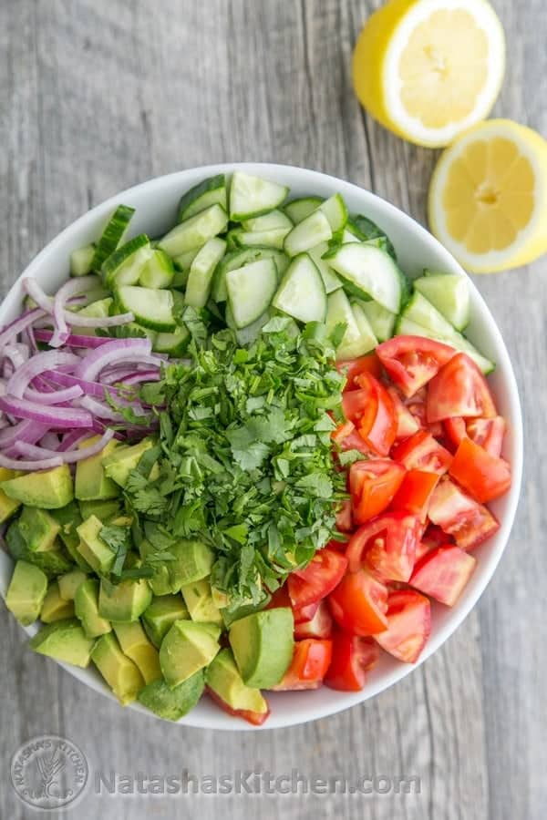

Go back to the bottom
Salad greens contain Vitamin A, Vitamin C, beta-carotene, calcium, folate, fiber, and
phytonutrients (see Table 1). Leafy vegetables are a good choice for a healthful diet
because they do not contain cholesterol and are naturally low in calories and sodium.
Ingredients:
- 1 lb Roma tomatoes
- 1 Rwandan cucumber
- 1/2 medium red onion,sliced
- 2 avocadoes,diced
- 2 Tbsp extra virgin olive oil or sunflower oil
- 2 Tbsp fresh lemon juice(from 1 medium lemon)
- 1/4 cup 1/2 bunch cilantro,chopped
- 1 tsp sea salt or 3/4 table salt
- 1/8 tsp black pepper
Steps of how to prepare isombe:
- Put chopped cilantro and tomatoes,sliced cucumber,sliced red onion,diced avocado into a large salad bowl.
- Drizzle with 2 Tbsp olive oil and 2 Tbsp lemon juice. Toss gently to combine. Just before serving, toss
with 1 tsp sea salt and 1/8 tsp black pepper.